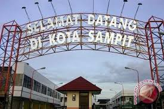
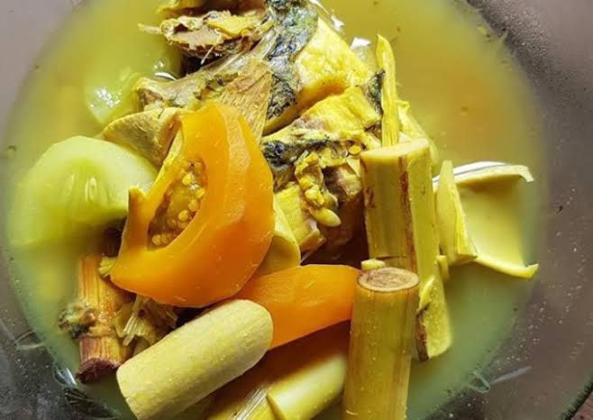
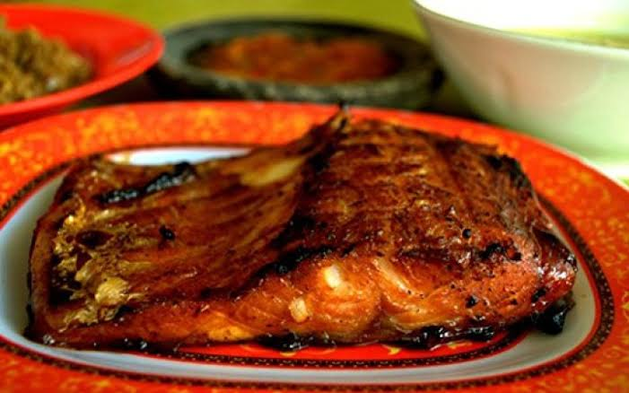

Sampit
Sampit adalah ibukota Kabupaten Kotawaringin Timur di Kalimantan Tengah,Indonesia.
Lokasi kota Sampit berada di Kecamatan Mentawa Baru Ketapang dan Kecamatan Baamang.
Jumlah penduduknya 166.733 jiwa pada tahun 2019 menurut data BPS Kabupaten Kotawaringin Timur.Budaya
Kota Sampit, yang terletak di Provinsi Kalimantan Tengah, Indonesia, memiliki warisan budaya yang kaya dan beragam, terutama dipengaruhi oleh suku Dayak yang merupakan penduduk asli wilayah tersebut. Berikut adalah penjelasan lebih lengkap tentang budaya Kota Sampit:
- Suku dayak
Suku Dayak adalah kelompok etnis asli Kalimantan Tengah, dan mereka memiliki peran yang sangat penting dalam budaya Sampit. Terdapat berbagai sub-suku Dayak, seperti Dayak Ngaju, Dayak Ot Danum, dan Dayak Maanyan, masing-masing dengan bahasa, adat, dan tradisi yang khas.
- bahasa
Suku Dayak memiliki bahasa sendiri yang disebut bahasa Dayak, meskipun Bahasa Indonesia juga digunakan secara luas
- Tradisi dan Adat
Tradisi Dayak meliputi sistem kepercayaan animisme, upacara adat, dan ritual yang berkaitan dengan kehidupan sehari-hari dan siklus hidup.
Rumah adat
- Rumah betang
Rumah adat Dayak yang disebut Rumah Betang adalah rumah panjang tradisional yang digunakan sebagai tempat tinggal bersama oleh beberapa keluarga. Struktur ini mencerminkan nilai-nilai kekeluargaan dan kebersamaan masyarakat Dayak. Rumah Betang biasanya memiliki banyak ruang dan terbuat dari bahan-bahan alami seperti kayu dan bambu.
Kesenian tradisional
Tarian seperti Tari Kancet Ledo, Tari Hudoq, dan Tari Mandau adalah bagian dari kesenian tradisional Dayak. Tari Kancet Ledo, misalnya, merupakan tarian yang biasanya dilakukan pada upacara adat dan festival. - **Seni Ukir dan Anyaman**: Seni ukir Dayak dikenal dengan motif yang rumit dan simbolis, sering kali menggambarkan elemen alam dan spiritual. Anyaman seperti tikar dan keranjang juga merupakan bagian dari keterampilan seni tradisional yang penting.
Kuliner
Kuliner di Sampit mencerminkan keberagaman budaya. Hidangan yang umum ditemui termasuk:
- Sayur asam 
- Ikan bakar 
Sup asam yang terbuat dari sayuran segar dan bumbu.
Ikan yang dipanggang dan disajikan dengan bumbu khas.
Pengaruh islam dan budaya lain
Meskipun budaya Dayak sangat dominan, pengaruh Islam dan budaya lainnya juga tampak dalam kehidupan sehari-hari di Sampit. Hal ini dapat dilihat dari berbagai perayaan keagamaan dan adaptasi budaya yang harmonis antara komunitas.
Secara keseluruhan, budaya Kota Sampit adalah campuran unik dari tradisi Dayak dan pengaruh budaya lain yang mencerminkan keberagaman dan kekayaan warisan budaya di wilayah tersebut.